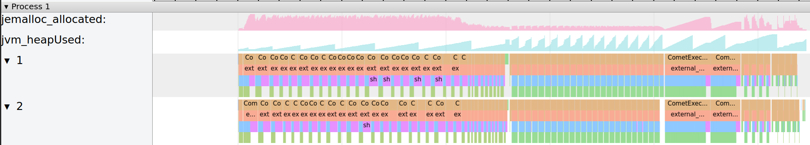

Tracing¶
Tracing can be enabled by setting spark.comet.tracing.enabled=true.
With this feature enabled, each Spark executor will write a JSON event log file in
Chrome’s Trace Event Format. The file will be written to the executor’s current working
directory with the filename comet-event-trace.json.
Additionally, enabling the jemalloc feature will enable tracing of native memory allocations.
make release COMET_FEATURES="jemalloc"
Example output:
{ "name": "decodeShuffleBlock", "cat": "PERF", "ph": "B", "pid": 1, "tid": 5, "ts": 10109225730 },
{ "name": "decodeShuffleBlock", "cat": "PERF", "ph": "E", "pid": 1, "tid": 5, "ts": 10109228835 },
{ "name": "decodeShuffleBlock", "cat": "PERF", "ph": "B", "pid": 1, "tid": 5, "ts": 10109245928 },
{ "name": "decodeShuffleBlock", "cat": "PERF", "ph": "E", "pid": 1, "tid": 5, "ts": 10109248843 },
{ "name": "execute_plan", "cat": "PERF", "ph": "E", "pid": 1, "tid": 5, "ts": 10109350935 },
{ "name": "CometExecIterator_getNextBatch", "cat": "PERF", "ph": "E", "pid": 1, "tid": 5, "ts": 10109367116 },
{ "name": "CometExecIterator_getNextBatch", "cat": "PERF", "ph": "B", "pid": 1, "tid": 5, "ts": 10109479156 },
Traces can be viewed with Trace Viewer.
Example trace visualization:

Definition of Labels¶
Label |
Meaning |
|---|---|
jvm_heapUsed |
JVM heap memory usage of live objects for the executor process |
jemalloc_allocated |
Native memory usage for the executor process |
task_memory_comet_NNN |
Off-heap memory allocated by Comet for query execution |
task_memory_spark_NNN |
On-heap & Off-heap memory allocated by Spark |
comet_shuffle_NNN |
Off-heap memory allocated by Comet for columnar shuffle |